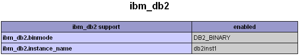
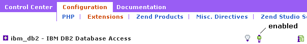
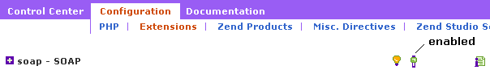

|

|
Installing PHP with support for DB2 databases
| PHP can be manually set up with support for DB2 databases by downloading and installing PHP onto the machine that hosts the HTTP server, rebuilding PHP with the DB2 libraries, and configuring PHP. Alternatively, install PHP Zend Core for IBM and configure the PHP extensions afterwards. |
Using Zend Core for IBM
The Zend Web site hosts Zend Core for IBM, an automated installer for PHP that provides full support for DB2 databases. The installer can automatically download and install a DB2 client or the DB2 Express-C server. Zend Core also includes a Web-based administration console for PHP. This console provides a GUI-based alternative to searching through the php.ini file for special configuration settings.
Ensuring the DB2 instance name is correctly identified for Linux and AIX
Ensure that the ibm_db2.instance_name variable in the php.ini file is set correctly (db2inst1 is the default for a DB2 instance). This should happen automatically during installation, however it is possible to check through the the PHP info page of the Zend Core Control Center. See the sample ibm_db2 settings section of the PHP info page in the Zend Core Control Center:
Ensuring the ibm_db2 extension is enabled for a manual PHP setup
To ensure that the ibm_db2 extension is enabled, scan the php.ini file for one of the following entries: extension=php_ibm_db2.dll (for Windows users) or extension=php_ibm_db2.so (for Linux users). Make sure that one of the above lines is present in the file and is not commented out. Alternatively, look for the following setting in the configuration menu of the Zend Core Control Center:
Configuration->Extension Menu" />Ensuring the SOAP extension is enabled for a manual PHP setup
To ensure that the SOAP extension is enabled, scan the php.ini file for one of the following entries: extension=php_soap.dll (for Windows users) or extension=php_soap.so (for Linux users). Make sure that one of the above lines in present in the file and is not commented out. Alternatively, look for the following setting in the configuration menu of the Zend Core Control Center:
Configuration->Extension Menu" />Useful links
PHP 5 SOAP extensionPHP 5 IBM_DB2 extension
© Copyright IBM Corp. 2007. All rights reserved.
IBM®, the IBM logo, DB2®, AIX®, and pureXML™ are
registered trademarks of International Business Machines Corporation in the
United States, other countries, or both.
Zend and Zend Core are registered trademarks of Zend Technologies Limited,
in the United States, other countries, or both.
Mozilla® and Firefox® are registered trademarks of the Mozilla Foundation in the
United States and other countries.
Microsoft, Windows, Windows NT, Internet Explorer®, and the Windows logo are
trademarks of Microsoft Corporation in the United States, other countries, or
both.
Linux is a registered trademark of Linus Torvalds in the United
States, other countries, or both.
Other company, product, or service names
may be trademarks or service marks of others.